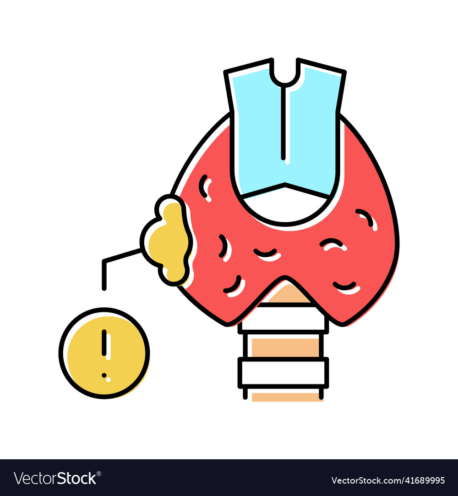

Portfolio

Improving the Thyroid Cancer Diagnosis using Machine Learning
It is a machine learning project done during the final year of my college in which the use of Machine Learning is leveraged to improve efficiency.

Framework Connector
This project aims to help two different frameworks communicate with each other. I did this project during my internship at Mastercard in July 2023 in Pune.
Rumour Source Detection
This project aims to identify the source of a rumour in a large social network using a Two Stage Algorithm to improve efficiency. The first stage is identifying the cluster and then in the second stage inside the identified cluster, we try to identify the source of the rumour.